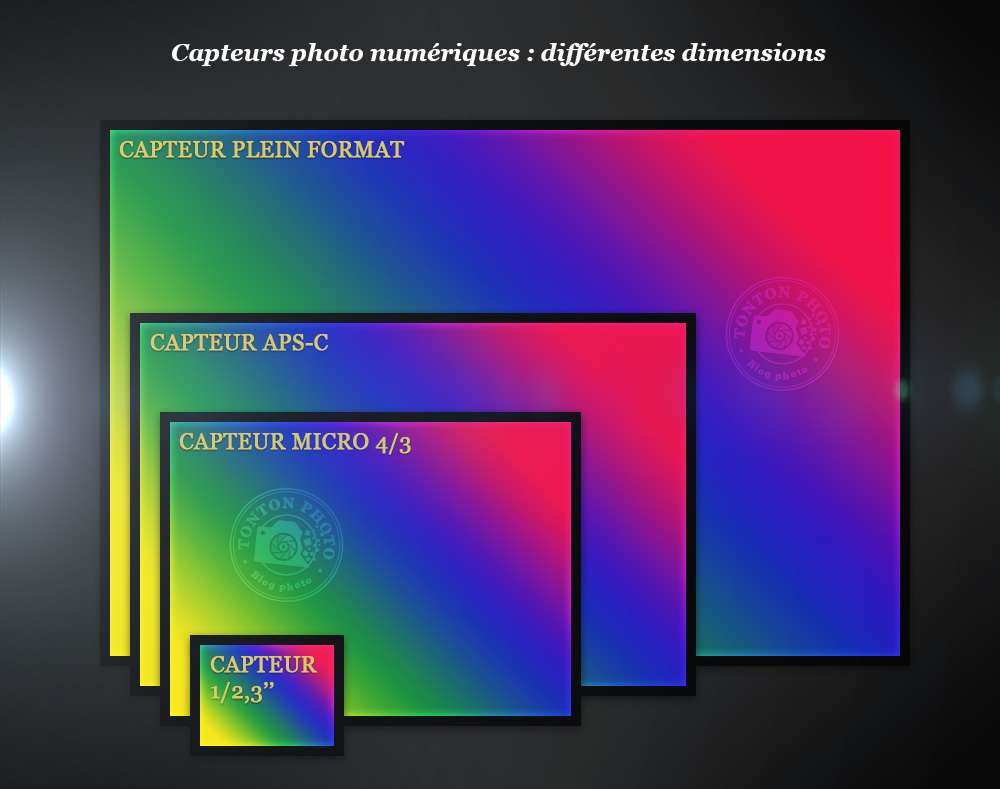

Construction d'une image et algorithmes de prise de vue
De nombreux algorithmes perfectionnés permettent de réaliser des photos d'excellente qualité, même avec un objectif et un capteur minuscule comme ceux des téléphones mobiles. Nous verrons dans cette section, le fonctionnement de 4 algorithmes essentiels pour la photographie.
Quels sont ces algorithmes et quand interviennent-ils dans la construction de l'image ?
L'algorithme de stabilisation
De nombreux algorithmes interviennent au cours de la capture et du traitement de l'image par l'appareil photo numérique. L'algorithme de stabilisation mécanique permet de corriger les vibrations de l'appareil afin d'améliorer la netteté de l'image.
Pour compenser les mouvements du photographe, le capteur photo est placé sur un support mobile. Lorsqu'un mouvement involontaire est détecté, le support se déplace pour stabiliser le capteur.
Ci-dessous, les différentes dimensions d'un capteur photo.

L'oeil et le capteur photographique
L'appareil photo numérique, largement inspiré de l'oeil humain, permet de capturer puis d'enregistrer les images de manière à repoduire ce que nous voyons le plus fidelement possible.
Vidéo de Derrière La Caméra.
cfgn
Algorithme de correction du flou
La stabilisation numérique corrige le flou lié au mouvement en diminuant le délai entre la prise de vue et le déclenchement de la photo ou en prenant rapidememnt plusieurs photos pour conserver la plus nette.
C'est le mode de stabilisation de base présent dans les appareils qui ne sont pas équipés de stabilisation mécanique Elle est realisée avant l'enregistement de la photo en format Raw
Les différentes dimensions d'un cpateur photo
Algorithme d'aide à la mise en point
Le focus peaking est une fonctions d'aide à la mise au point proposée dans le menude prise de vue de certains téléphones? Le smartphone détecte les bords les plus contrastés des objets et met en évidence avec des couleurs. On peut donc voir presque immédiatement les zones nettes de l'image.
Exemple sur une bouteille de vin
Algorithme de correction des couleurs
Les couleurs capturés par les photosites du capteur peuvent parfois sembler fades pour l'oeil humain ou bien trop intenses. L'intensité de la couleur est mesurée par la la saturation. Un traitement numérique, après l'enregistrement de la photo au format RAW et avant la compression, est alors nécessaire. Il est effectué par des algorithmes de correction de la saturation des couleurs. Les smartphones proposent plusieurs réglages de saturation dans les filtres. L'image est traité numériquement à partir de la même prise de vue pour corriger la saturation des couleurs.
Voici deux types de photos, l'un est normal et l'autre avec un filtre